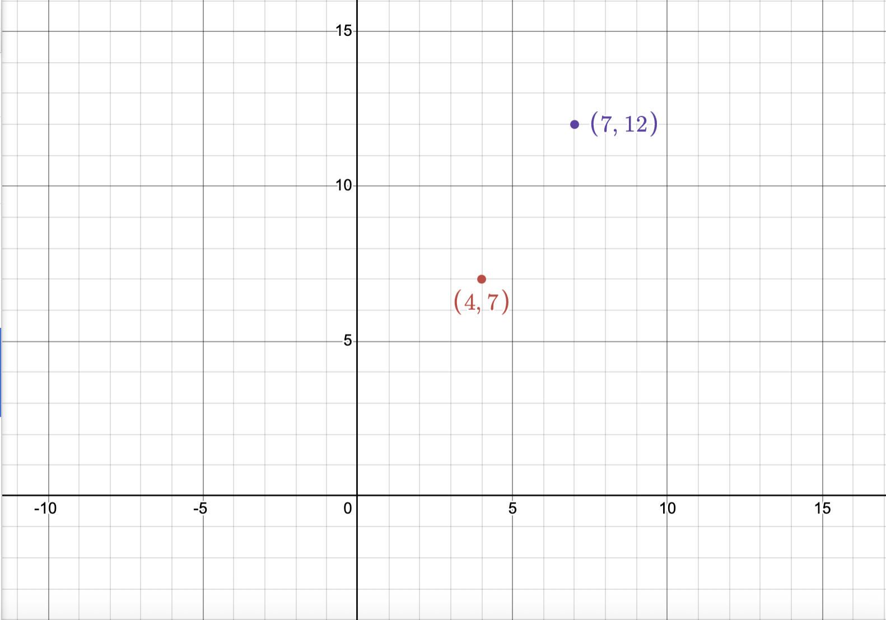
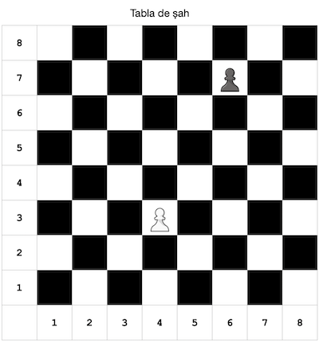

Săptămâna 4
Soluția simplă pentru problema minim3 poate fi accesată aici.
Soluția cu funcția std::min() pentru problema minim3 poate fi accesată aici.
Temă
În continuare propunem următoarele probleme din saga fermierului Ion:
A. Distance to Barn
Cerință
Recent, fermierul Ion și-a cumpărat o nouă parcelă de pământ. Nerăbdător, vrea să înceapă deîndată construcția unui nou grajd pentru vacile sale. Din nefericire, vacile sale sunt mofturoase, iar dacă noul grajd depășește o anumită distanță \(d\) de locul de păscut, atunci o să fie nemulțumite.
Dacă este să considerăm întreg terenul fermierului Ion ca un sistem de axe \(xOy\), atunci noul grajd de va afla la coordonatele \((x_{grajd}, y_{grajd})\), iar pajiștea vacilor la \((x_{pajiște}, y_{pajiște})\).
Fermierul Ion, nefiind prea strălucit la matematică, vă cere să determinați dacă vacile sale vor fi mulțumite de locația noului grajd.
Date de Intrare
Se vor citi de la tastatură două trei linii conținând coordonatele grajdului și pajiștii și distanța impusă de vaci. Pe prima linie se vor regăsi, separate printr-un unic spațiu, două numere reale \(x_{grajd}\) și \(y_{grajd}\). Pe cea de-a doua linie se află, la fel ca mai sus, următoarele două numere reale \(x_{pajiște}\), respectiv \(y_{pajiște}\). Pe ultima linie se află un singur număr real \(d\), reprezentând distanța precizată mai sus.
Date de Ieșire
Se va afișa un mesaj corespunzător dacă distanța de la pajiște la grajd nu depășește distanța \(d\) dorită de vacile fermierului Ion. Dacă totul este în regulă, atunci se va afișa mesajul GOOD, altfel se va afișa mesajul VERY BAD.
Restricții și Precizări
- \(-1000 \leq x_{grajd}, x_{pajiște} \leq 1000\)
- \(-1000 \leq y_{grajd}, y_{pajiște} \leq 1000\)
- \(0 \leq d \leq 3000\)
- Se recomandă utilizarea tipului de date
doublepentru evitarea erorilor de aproximare - Cunoaștem din matematică ca distanța \(D\) dintre două puncte fixe \(A\) și \(B\), având coordonatele \((x_A, y_A)\) și \((x_B, y_B)\) este \(D = \sqrt{ (x_B - x_A)^2 + (y_B - y_A)^2 }\)
Exemplu
Intrare
4 8
7 12
5
Ieșire
GOOD
Intrare
4 8
7 12
4.99
Ieșire
BAD
Iată cum ar arăta cele două locații în sistemul de axe \(xOy\).

B. Check Moo-ey-te
Cerință
La fermă, vacile au găsit o nouă modalitate de a-și petrece timpul liber: pe o tablă standard de șah așază aleatoriu doi pioni de culori diferite și își pun problema dacă pionul alb îl poate captura pe cel negru. Vaca Besi pariind trei baloți întregi de fân (o întreagă avere la fermă) are nevoie de ajutorul vostru ca să răspundă corect în următoarea rundă a jocului.
O tablă de șah este un caroiaj de \(8 \times 8\) căsuțe ce alternează între culorile alb și negru.
Numerotarea căsuțelor se realizează ca în imaginea de mai jos:

Pionul alb se află pe rândul 3, coloana 4, iar pionul negru se află pe rândul 7, coloana 6.
Pionul din jocul propus respectă proprietățile din șah, putând să captureze o altă piesă numai pe cele două căsuțe din față, adiacente cu diagonala.
Date de Intrare
Se vor citi pe o singură linie patru numere naturale \(r_1, c_1, r_2, c_2\). Numerele \(r_1, c_1\) reprezintă rândul și coloana pe care se regăsește pionul alb. În egală măsură, \(r_2, c_2\) sunt rândul și coloana unde va fi pus pionul negru.
Date de Ieșire
Se va afișa un mesaj corespunzător în funcție de următoarele cazuri:
CHECK, dacă pionul alb poate captura pionul negruLOSE, dacă pionul alb nu poate captura pionul negruDRAW, dacă cei doi pioni se află față în față
Restricții și Precizări
- \(1 \leq r_1, r_2, c_1, c_2 \leq 8\)
Exemplu
Intrare
3 4
4 3
Ieșire
CHECK
Intrare
3 4
4 5
Ieșire
CHECK
Intrare
3 4
8 8
Ieșire
LOSE
Intrare
4 8
5 8
Ieșire
DRAW
Intrare
4 8
3 7
Ieșire
LOSE